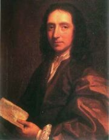

Edmond Halley
Stručný životopis Edmonda Halleye
Rodiče
Otec se jmenoval Edmond, stejně jako syn. Byl hodně bohatý, proto měl také Edmond Halley mladší ve svých začátcích jedny z nejdokonalejších přístrojů, jaké tehdy existovaly. Otec byl obchodník, mydlář a solnář. O matce se toho moc neví, snad to, že se jmenovala Anna Robinsonová.
Život a dílo

Portrét Edmond Halleye
Jeho datum narození není známo. Halley sám se domníval, že se narodil 29. října 1656 v jedné obci blízko Londýna. Zajímat o vědu se začal již ve svých dětských letech. Když mladý Halley trochu povyrostl, otec ho poslal na fakultu sv. Pavla, což byla jedna z nejlepších škol v Británii. Poté této škole studoval na královské universitě v Oxfordu.
10. března 1675 Halley poslal prvnímu královskému astronomovi Johnu Flamestedovi zprávu o tom, že našel chybu v tabulkách poloh Jupiteru a Saturnu, které vypočetl Tycho Brahe. Flamesteda to zaujalo a pomohl za to Halleyovi uveřejnit vědeckou zprávu „Přímá a geometrická metoda zjištění afélia výstředností a proporcí primárních planet, aniž by se předpokládala rovnost úhlového pohybu“.
Jeho zpráva vzbudila pozornost a tak bez obhájení akademického titulu odjel na ostrov sv. Heleny a sestavil první mapu jižní hvězdné oblohy. Měl tam sice potíže s guvernérem ostrova, ale domů se vrátil nejen s první mapou jižní hvězdné oblohy, ale objevil i nové dvojhvězdy, mlhoviny a pozoroval přechod Merkuru přes Sluneční disk, což mu později pomohlo při stanovení velikosti astronomické jednotky.
V britské královské společnosti to ocenili, ale pro Oxford byl Halley pouze nedostudovaným studentem. Proto se Halley obrátil na Anglického krále a ten písemně požádal Oxford, aby Halleyovi udělili titul „Master of Arts“. Oxford souhlasil. Zhruba ve stejné době byl přijat členem britské královské společnosti, což pro něj tehdy byla velká pocta.
{kind=link}
Jednou mezi vědci propukly spory o tvaru drah komet. Cassini tvrdil, že jsou kruhové, Newton zase, že parabolické, biskup ze Salibury, kterého Halley v žádném případě nechtěl urazit, tvrdil že jsou to elipsy a byli i zastánci hyperbol. Podle pozorování se nedal žádný druh dráhy jednoduše vyřadit. Halley porovnal dráhy 24 tehdy známých komet pozorovaných v letech 1337 – 1698. U komet z let 1531, 1607 a 1682 zjistil velice podobné charakteristiky drah a něco jako periodický návrat. Usoudil, že je to stále ta samá kometa a předpověděl datum návratu a místo na obloze, ve kterém se bude kometa nacházet. Nepřesnosti ve výpočtech Halley přičítal gravitačním vlivům Jupiteru a Saturnu. Předpověď později vyšla, ale Halley se toho už nedožil.
Ve svém životě byl Halley jak zbaven titulu, tak se i stal profesorem geometrie v Oxfordu. Nezabýval jen astronomií, ale i o jinými vědami, např. meteorologií, velikostí atomu, magnetismem, teplem, vzduchem, rostlinami, mušlemi, hodinami, kaviárem, světlem, římskými dějinami, aerodynamikou, sépiemi a dalšími věcmi. Mezi jeho úspěchy patří vynalezení prvního potápěčského zvonu (se kterým byla založena prosperující záchranářská společnost), zmapování magnetismu Atlantického oceánu, výpočty drah komet, vypočítání vzdálenosti Země od Slunce, jako první dokázal přečíst jediný dochovalý popis kuželoseček Apolónia z Pergy a jiné.